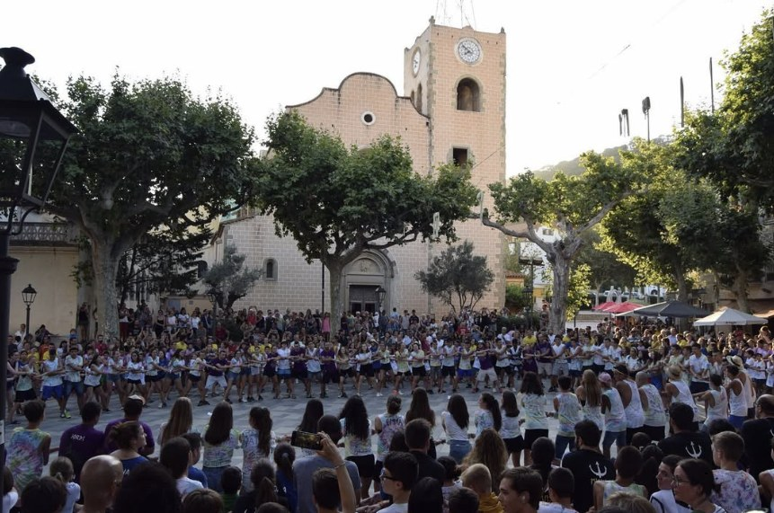
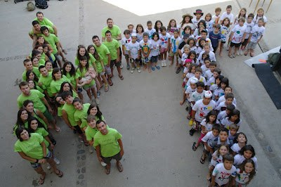
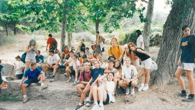
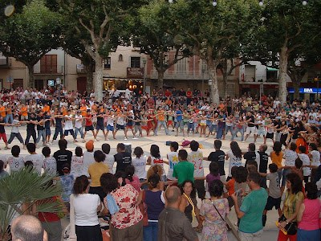

Les Cate-Colònies
Sant Martí
Unes colònies educatives d'Arenys de Munt, sense ànim de lucre i fetes íntegrament per voluntaris, des de l'estiu de 1984.
Créixer junts
Les KT són colònies educatives amb vocació de servei. Volem acompanyar el creixement personal de tots els que hi participen i oferir una educació humana i cristiana.
Cada any triem un lema o centre d'interès que dona sentit a tots els dies de colònies, adaptat a l'edat de cada torn.
El nostre objectiu de fons és formar persones lliures, crítiques i responsables, que confiïn en els altres i treballin per una societat més justa, respectuosa i fraterna.

La nostra història
Les Cate-Colònies Sant Martí d'Arenys de Munt vam néixer l'any 1984 com a cloenda dels cursos de catequesi, i des d'aleshores no s'han deixat de fer ni un sol any. Aquell primer any, 57 nois i noies i 15 monitors i monitores van anar a la casa de colònies de La Mina d'Osor.
Les «Cate» van créixer ràpidament: dels 72 participants dels primers anys es va passar a 175 l'any 1989, quan per primera vegada es van fer dos torns de colònies a dues cases diferents, Els Arcs de Santa Pau i La Vileta.
I el creixement va continuar. L'any 1990 ja no n'hi havia prou amb dos torns i en van caldre tres per atendre la gran demanda: 182 participants a tres cases de colònies, Santa Ceclina de Llagostera, La Mina d'Osor i Sant Aniol de Finestres.
L'any 1998 es va arribar als quatre torns, cadascun amb la seva casa. En els darrers anys també ha calgut introduir un límit de places, ja que el gran creixement de les Cate-Colònies ha fet del tot inviable atendre tota la demanda.
Actualment les Cate-Colònies som prop de 350 persones, entre nois i noies, monitors i monitores, equips de cuina, equips de responsables i els encarregats del transport. Tots som voluntaris.


